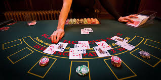
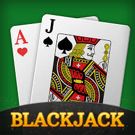

Estrategias de Blackjack
El Blackjack no solo es un juego de azar, sino también de estrategia. Para mejorar tus probabilidades de ganar, es importante seguir ciertas estrategias básicas, como saber cuándo plantarse, pedir una carta o doblar la apuesta.
Una de las estrategias más populares es el "conteo de cartas", que permite a los jugadores llevar un registro de las cartas altas y bajas que han sido jugadas. Aunque este método puede dar una ventaja, no es infalible y muchos casinos tienen medidas para detectarlo.

Otro enfoque clave es entender la tabla de decisiones, que te dice la mejor acción a tomar según tu mano y la carta visible del crupier. Esta tabla está basada en cálculos matemáticos que maximizan tus probabilidades de éxito.
